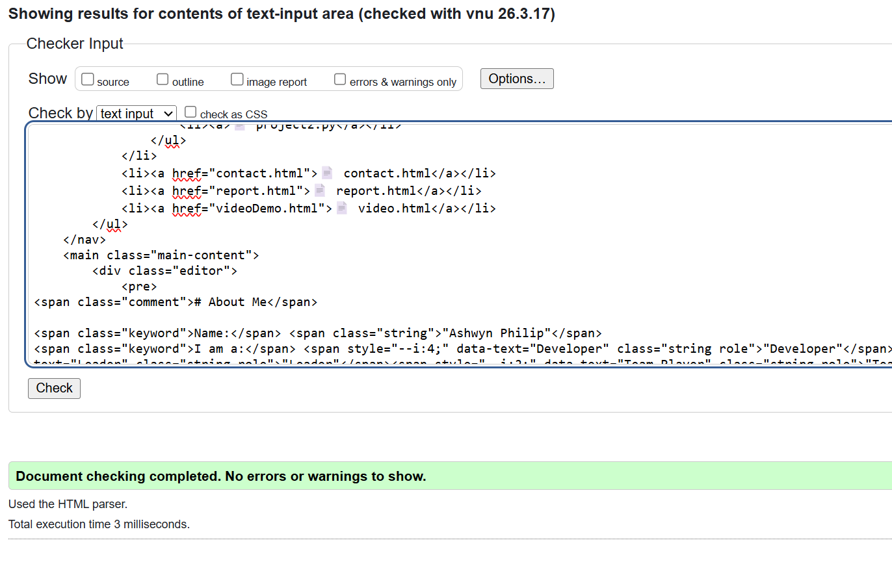
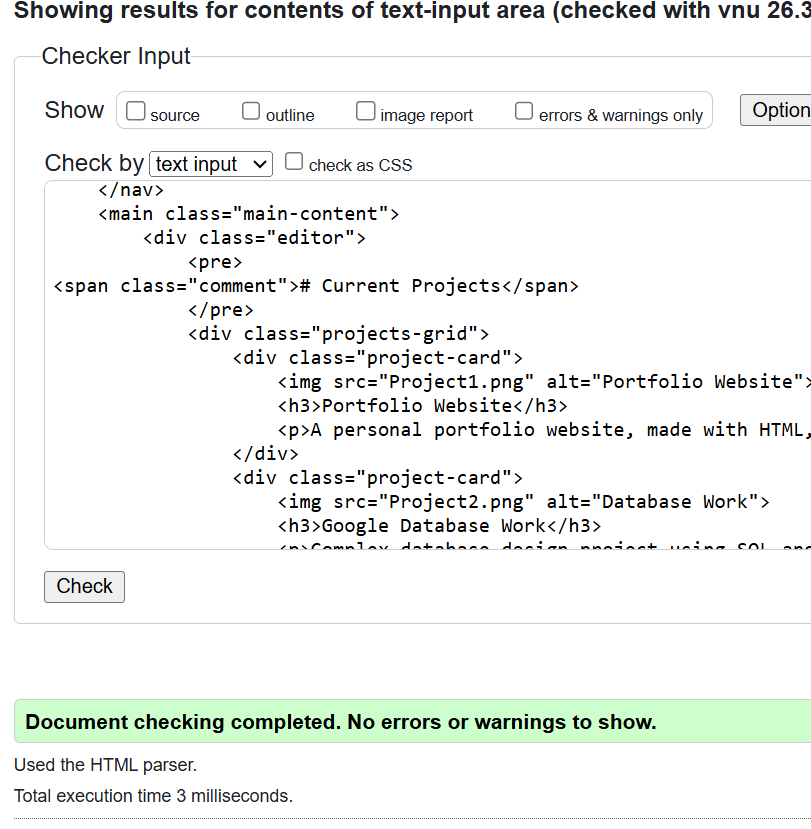
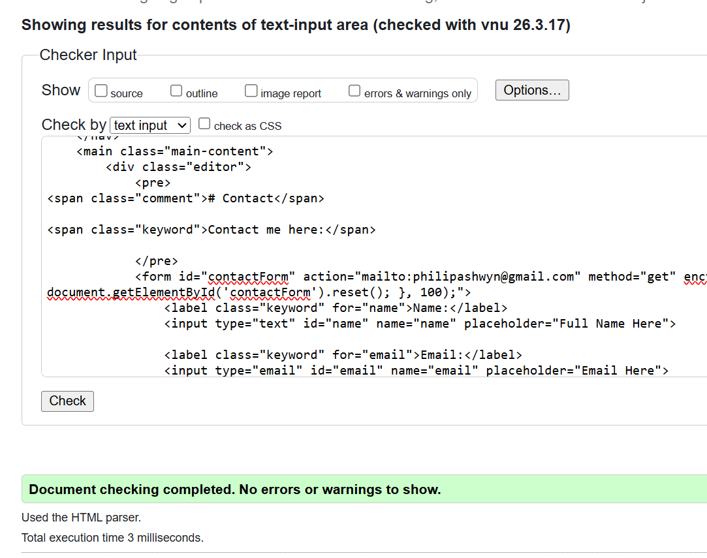
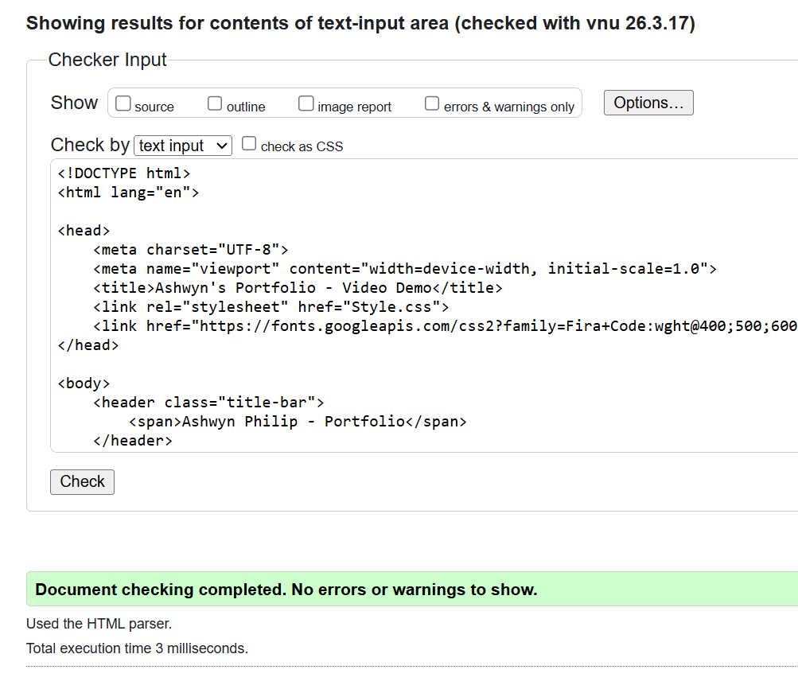
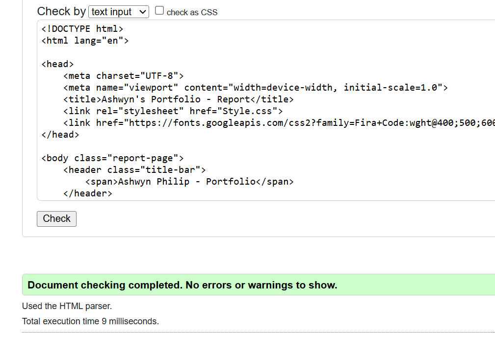
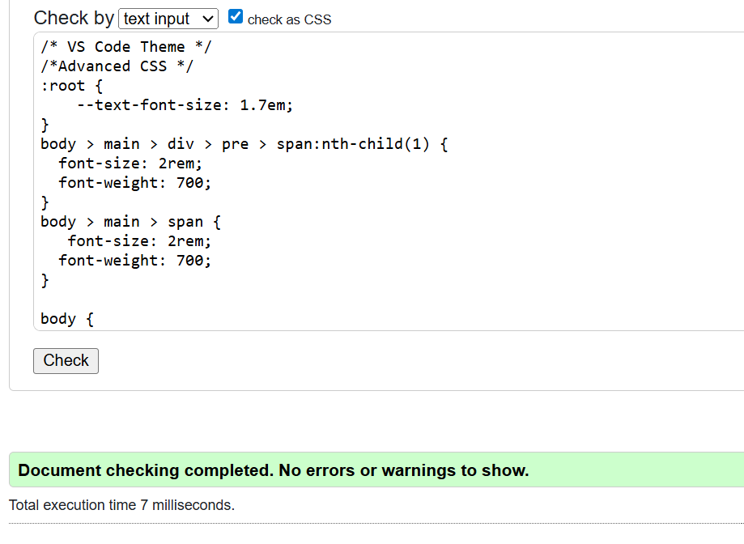

Ashwyn Philip's Portfolio Report
Development Reflection and Process
I began this project inspired by a concept that was discussed casually in class, designing my portfolio to resemble Visual Studio Code. This was quite straightforward to visualise, as I decided that the area where files are normally displayed in Visual Studio Code would instead function as the navigation bar. I also chose to maintain a similar colour palette throughout the site, ensuring that all pages, except this report because this has to look like Word, reflected that theme.
Firstly, I wanted to create the foundation of the website. I created the necessary files as required by the brief, built the overall structure of the website, and made sure the navigation bar was consistent and fully functional. I added basic content to each section, so I had something to build upon.
Then I attempted to create the CSS to match my design idea. However, after several unsuccessful attempts, I decided to use the AI inside Visual Studios. The AI helped with CSS that looked like the Visual Studio aesthetic and gave me a good starting point for the website.
Once the styling was in place, I expanded the content and followed online YouTube tutorials to add animations, such as the changing text, and the contact form. Although I struggled to fully understand some aspects, AI support helped me with features such as clearing the form fields after the send button was clicked.
Overall, making this Portfolio website was harder than I initially expected. However, with the support of the week 1-6 class PowerPoints, YouTube tutorials, and AI tools, I was able to finish it.
Validation Proof
Index/Home Page

Project Page

Contact Page

Video Demo Page

Report Page

Style/CSS Page
